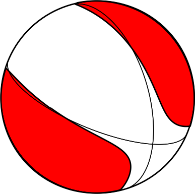
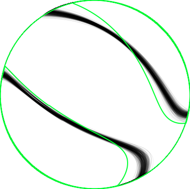
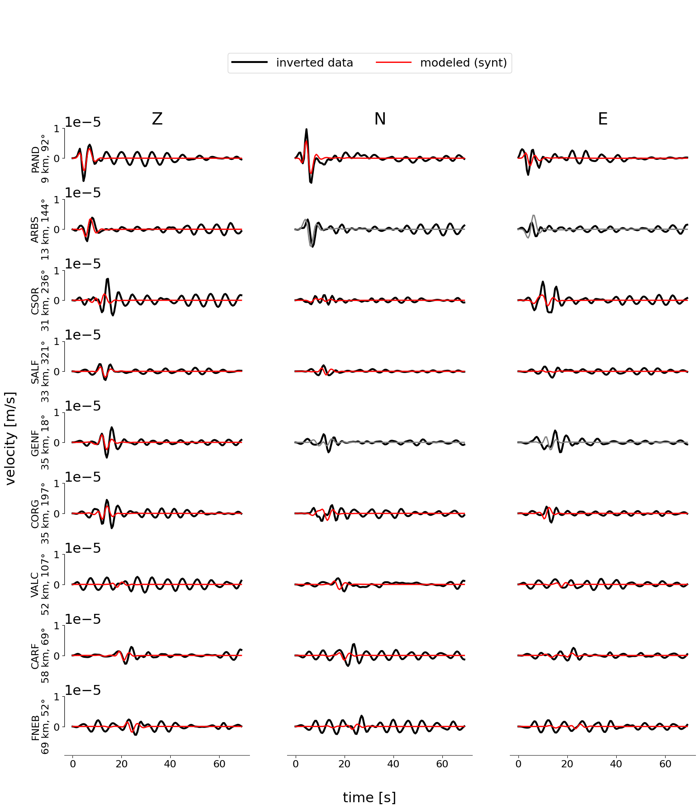
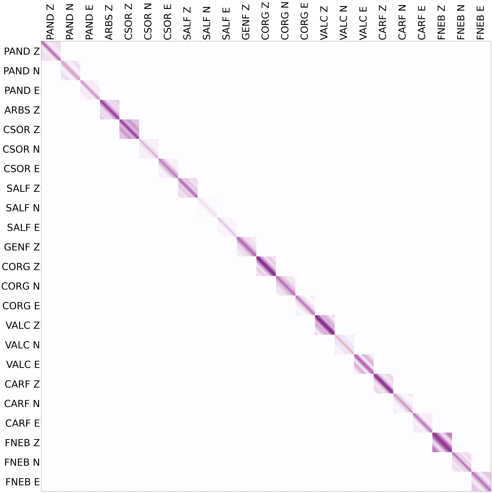
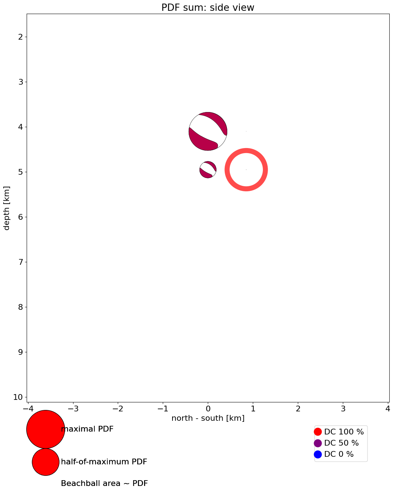

surfQuake MTI
- Method
- Waveform inversion for deviatoric part of moment tensor (5 components)
with the data covariance matrix based on real noise.
- Reference
- Vackář, Gallovič, Burjánek, Zahradník, and Clinton. Bayesian ISOLA: new tool for automated centroid moment tensor inversion, in preparation, PDF
Hypocenter location
- Agency
- Origin time
- 2022-02-01 02:03:00
- Latitude
- 42.527° N
- Longitude
- 1.442° E
- Depth
- 5.8 km
- Magnitude
- 3.6
Results

moment tensor best solution

moment tensor uncertainty
Centroid location
|
absolute |
relative |
| Time |
2022-02-01 02:03:00 |
0.68 s before origin time |
| Latitude |
42.519° N |
851 m south of the epicenter |
| Longitude |
1.432° E |
851 m west of the epicenter |
| Depth |
5.8 km |
0.0 km deeper than location |
Moment tensor and its quality
| Centroid position |
|---|
| depth | 5.8 km |
|---|
| Seismic moment |
|---|
| scalar seismic moment M0 | 2.77e+14 Nm |
|---|
| moment magnitude Mw | 3.6 |
|---|
| Moment tensor components |
|---|
| Mrr | -1.82 * 1e+14 |
|---|
| Mθθ | 0.74 * 1e+14 |
|---|
| Mϕϕ | 1.08 * 1e+14 |
|---|
| Mrθ | -1.17 * 1e+14 |
|---|
| Mrϕ | 0.10 * 1e+14 |
|---|
| Mθϕ | -1.68 * 1e+14 |
|---|
| Moment tensor decomposition |
|---|
| DC | 72 % |
|---|
| CLVD | 28 % |
|---|
| strike | 115 / 344 |
|---|
| dip | 61 / 41 |
|---|
| rake | -119 / -49 |
|---|
| Quality measures |
|---|
| condition number | 3 |
|---|
| variance reduction | 22 % |
|---|
Histograms—uncertainty of MT parameters

moment magnitude
Histograms—uncertainty of centroid position and time

position north-south
Data used
Components used in inversion and their weights
| station | component | distance * | azimuth | fmin | fmax |
|---|
| code | channel | Z | N | E | (km) | (deg) | (Hz) | (Hz) |
|---|
| FR:PAND | HH | 1.0 | 1.0 | 1.0 | 9 | 92 | 0.02 | 0.25 |
| CA:ARBS | HH | 1.0 | --- | --- | 13 | 144 | 0.02 | 0.25 |
| CA:CSOR | HH | 1.0 | 1.0 | 1.0 | 31 | 236 | 0.02 | 0.25 |
| FR:SALF | HH | 1.0 | 1.0 | 1.0 | 33 | 321 | 0.02 | 0.25 |
| FR:GENF | HH | 1.0 | --- | --- | 35 | 18 | 0.02 | 0.25 |
| CA:CORG | HH | 1.0 | 1.0 | 1.0 | 35 | 197 | 0.02 | 0.25 |
| FR:VALC | HH | 1.0 | 1.0 | 1.0 | 52 | 107 | 0.02 | 0.25 |
| FR:CARF | HH | 1.0 | 1.0 | 1.0 | 58 | 69 | 0.02 | 0.25 |
| FR:FNEB | HH | 1.0 | 1.0 | 1.0 | 69 | 52 | 0.02 | 0.25 |
Data source
Station coordinates: /var/folders/gj/jqdffl4j0694fbnkzr8x231h0000gn/T/tmpdliyqbjb/stations.txt

waveform fit
(non-filtered)

data covariance matrix
Stability and uncertainty of the solution
Posterior probability density function (PPD)

PPD: north-south view
Stability in space (top view)
Stability in space (side view)
Calculation parameters
Grid-search over space
- number of points
- 729
- horizontal step
- 851 m
- vertical step
- 851 m
- grid radius
- 3.665 km
- minimal depth
- 2.135 km
- maximal depth
- 9.465 km
- rupture length (estimated)
- 0.665 km
Grid-search over time
- min
- -1.00 s (-100 samples)
- max
- 1.27 s (127 samples)
- step
- 0.04 s ( 4 samples)
Green's function calculation
- Crustal model
- /Volumes/LaCie/surfquake_test/working_directory/earth_models/Iberia.dat
- npts
- 256
- tl
- 128.00
- freq
- 129
- npts for inversion
- 139
- source time function
- triangle in velocity, length = 2.0 s
Sampling frequencies
- Data sampling
- 100.0 Hz, 100.0 Hz, 100.0 Hz, 100.0 Hz, 100.0 Hz, 100.0 Hz, 100.0 Hz, 100.0 Hz, 100.0 Hz
- Common sampling
- 100.0 Hz
- Decimation factor
- 50 x
- Sampling used
- 2.0 Hz

{kind=link}
{kind=link}
{kind=link}
{kind=link}
{kind=link}
{kind=link}
{kind=link}
{kind=link}
{kind=link}
{kind=link}
{kind=link}
{kind=link}
{kind=link}
{kind=link}
{kind=link}
{kind=link}
{kind=link}
{kind=link}
{kind=link}
{kind=link}
{kind=link}
{kind=link}
{kind=link}
{kind=link}
{kind=link}
{kind=link}
{kind=link}
{kind=link}
{kind=link}